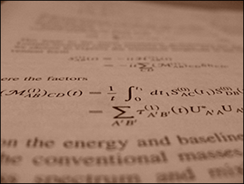

Publications
Refereed publications
1. Energetic output of the 2022 Hunga
Tonga–Hunga Ha‘apai volcanic eruption from pressure
measurements. J. S. Díaz and S. E. Rigby, Shock
Waves (2022)
DOI:10.1007/s00193-022-01089-z
2. Blast wave kinematics: theory,
experiments, and applications
J. S. Díaz and S. E. Rigby,
Shock Waves, in press (2022) [arXiv:2110.09488]
3. Product development in a
multicriteria context
P. Süss, G. Foltin, M. Heidgen,
D. Hajnal, J. S. Díaz, H. Schultze, J. Gattermayer, S. Lehner,
in Simulation and Optimization in Process Engineering,
Eds. M. Bortz, N. Asprion, Elsevier (2022)
DOI:10.1016/B978-0-323-85043-8.00001-5
4.
Explosion analysis from images: Trinity and Beirut
J. S. Díaz,
Eur. J. Phys. 42, 035803 (2021) [arXiv:2009.05674]
5. Testing Lorentz and CPT invariance with neutrinos
J. S. Díaz,
Symmetry 8, 105 (2016) [arXiv:1609.09474]
6. Changes in extensive air showers from
isotropic Lorentz violation in the photon sector
J. S. Díaz, F. R. Klinkhamer, and M. Risse,
Phys. Rev. D 94, 085025 (2016) [arXiv:1607.02099]
7. Limits on CPT violation from solar
neutrinos
J. S. Díaz and T. Schwetz,
Phys. Rev. D
93, 093004 (2016) [arXiv:1603.04468]
8. First search for Lorentz and CPT violation in
double beta decay with EXO-200
EXO-200 Collaboration
and J. S. Díaz,
Phys. Rev. D 93, 072001
(2016)
[arXiv:1601.07266]
9. Neutrino refraction by the cosmic
neutrino background
J. S. Díaz and F. R. Klinkhamer,
Phys. Rev. D 93, 053004 (2016) [arXiv:1512.00817]
10. Parton-model calculation of a
nonstandard decay process in isotropic modified Maxwell theory
J. S. Díaz and F. R. Klinkhamer,
Phys. Rev. D
92, 025007 (2015) [arXiv:1504.01324]
11. Tests of Lorentz symmetry in single beta decay
J. S. Díaz, Adv. High Energy Phys. 2014, 305298 (2014). [arXiv:1408.5880]
12. Neutrinos as probes of Lorentz invariance
J. S. Díaz, Adv. High Energy Phys. 2014, 962410 (2014) [arXiv:1406.6838]
13. Limits on Lorentz and CPT violation from double beta decay
J. S. Díaz, Phys. Rev. D 89, 036002 (2014) [arXiv:1308.0930]
14. Testing relativity with high-energy astrophysical neutrinos
J. S. Díaz, V. A. Kostelecký, and M. Mewes, Phys. Rev. D 89, 043005 (2014) [arXiv:1308.6344]
15. Search for neutrino-antineutrino oscillations with a reactor experiment
J. S. Díaz, T. Katori, J. Spitz, and J. M. Conrad, Phys. Lett. B 727, 412 (2013) [arXiv:1307.5789]
16. Relativity violations and beta decay
J. S. Díaz, V. A. Kostelecký, and R. Lehnert, Phys. Rev. D 88, 071902 (2013) [arXiv:1305.4636]
17. Lorentz- and CPT-violating models for neutrino oscillations
J. S. Díaz and V. A. Kostelecký, Phys. Rev. D 85, 016013 (2012) [arXiv:1108.1799]
18. Three-parameter Lorentz-violating texture for neutrino mixing
J. S. Díaz and V. A. Kostelecký, Phys. Lett. B 700, 25 (2011) [arXiv:1012.5985]
19. Perturbative Lorentz and CPT violation for neutrino and antineutrino oscillations
J. S. Díaz, V. A. Kostelecký, and M. Mewes, Phys. Rev. D 80, 076007 (2009). [arXiv:0908.1401]
20. Reproducibility of a titanium plasma vacuum spark discharge
E. Wyndham, M. Favre, H. Chuaqui, P. Choi, A. Leñero,
and J. S. Díaz, IEEE Trans. Plasma Sci. 33, 1662 (2005)
Non-refereed publications
Long-Baseline Neutrino Facility (LBNF) and Deep Underground Neutrino
Experiment (DUNE) Conceptual Design Report,
Volume 4: The DUNE Detectors
at LBNF.
DUNE Collaboration,
arXiv:1601.02984
Long-Baseline Neutrino Facility (LBNF) and Deep Underground Neutrino
Experiment (DUNE) Conceptual Design Report,
Volume 1: The LBNF and DUNE
Projects.
DUNE Collaboration,
arXiv:1601.05471
Long-Baseline Neutrino Facility (LBNF) and Deep Underground Neutrino
Experiment (DUNE) Conceptual Design Report,
Volume 2: The Physics
Program for DUNE at LBNF.
DUNE Collaboration,
arXiv:1512.06148
Correspondence between nonstandard
interactions and CPT violation in neutrino oscillations
J. S. Díaz,
arXiv:1506.01936
Light Sterile Neutrinos: A White Paper.
K. N. Abazajian et al., Patrick Huber and Jon Link, ed. (2012),
arXiv:1204.5379
Two-dimensional Hawking radiation from the AdS/CFT correspondence.
J. S. Díaz,
arXiv:0804.0789
Other publications
Lorentz symmetry and neutrinos
J. S. Díaz, Ph.D. Thesis, Indiana University, 2014
Testing times for relativity
J. S. Díaz, CERN Courier, p.31, November 2013.
Conference proceedings
Astroparticles and tests of Lorentz invariance.
J. S. Díaz,
7th Meeting on CPT and Lorentz Symmetry (CPT'16), Bloomington, IN, June 20-24, 2016. [arxiv:1608.08373]
Tests of Lorentz and CPT invariance with neutrinos and photons.
J. S. Díaz, 4th
Symposium on Prospects in the Physics of Discrete Symmetries
(DISCRETE2014), London, UK, December 2–6, 2014. [J.Phys.Conf.Ser.
631, 012021 (2015)]
Lorentz and CPT violation in the neutrino sector.
J. S. Díaz,
6th Meeting on CPT and Lorentz Symmetry (CPT'13), Bloomington, IN, June 17-21, 2013. [arXiv:1307.6845]
Lorentz- and CPT-violating texture for neutrino oscillations.
J. S. Díaz, AIP Conf.Proc. 1441, 474 (2012); 19th Particles and Nuclei International Conference PANIC 2011, Cambridge, MA, July 24–29, 2011.
Overview of Lorentz violation in neutrinos.
J. S. Díaz, 2011 Meeting of the Division of Particles and Fields of the American Physical Society DPF-2011, Providence, RI, August 09-13, 2011. [arXiv:1109.4620]
Lorentz and CPT violation in neutrino oscillations.
J. S. Díaz, 5th Meeting on CPT and Lorentz Symmetry (CPT'10), Bloomington, IN, June 28-July 2, 2010. [arXiv:1008.0411]
Long-baseline neutrino experiments as tests for Lorentz violation.
J. S. Díaz, 2009 Meeting of the Division of Particles and Fields of the American Physical Society DPF-2009, Detroit, MI, July 26-31, 2009. [arXiv:0909.5360]